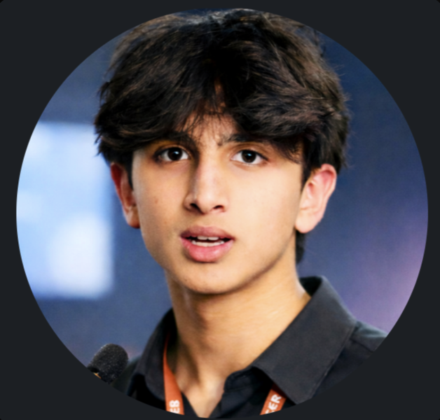

Founder & Executive Director
Akshat Agarwal
Akshat founded Neorons and leads it: he sets programme direction, builds the school and partner relationships, and makes the final call on what Neorons runs and why. His background is in AI and suicidology, with published research in machine learning and bioethics, and it shapes the organization's safety-first approach to technology in education.